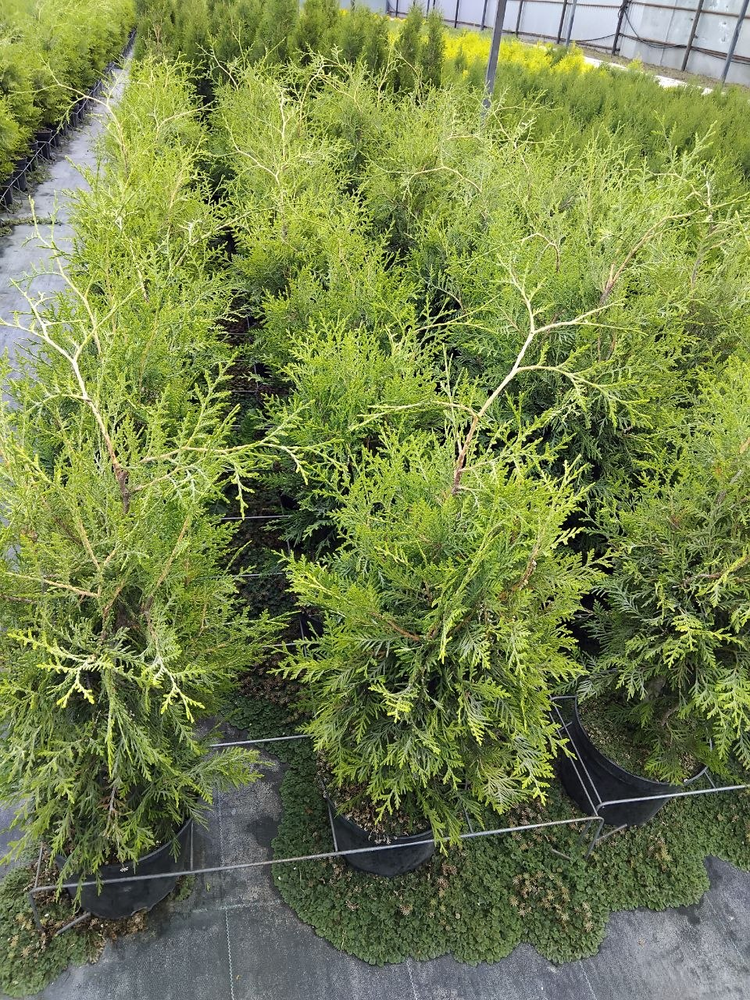
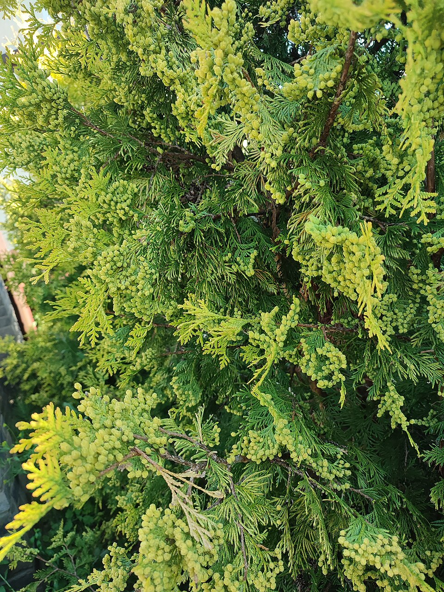

Туя Брабант
Thuja occidentalis 'Brabant'
- Возраст: 5 лет
- Контейнер: 5 л
- Высота: 70–110 см
Цена: от 700 до 1 100 ₽
Характеристики и уход
Внешний вид и особенности
Быстрорастущая туя с плотной пирамидальной кроной и густой зелёной хвоёй. Отличается высокой морозостойкостью и хорошей переносимостью стрижки, поэтому подходит как для свободного роста, так и для живых изгородей.
Размеры и прирост
Взрослое растение достигает высоты около 12–15 м при ширине кроны 3–5 м. Ежегодный прирост составляет примерно 15–25 см в высоту.
Почва
Подходит плодородная, рыхлая, дренированная почва от слабокислой до нейтральной. Перед посадкой рекомендуется улучшить посадочную яму перегноем и песком.
Освещение
Лучше всего растёт на солнце или в лёгкой полутени. В густой постоянной тени крона становится редкой и вытянутой.
Полив и уход
В первый сезон поливайте регулярно, поддерживая умеренную влажность почвы. В дальнейшем растение засухоустойчиво, но в жару и засуху требует подкормки и мульчирования приствольного круга. Весной желательна лёгкая формирующая стрижка.
Место посадки
Хорошо подходит для солнечных участков, вдоль забора и для изгородей. Сажайте вдали от карнизов и сливных труб.
Важно: не сажайте растение в месте, где с крыши на него или к корням постоянно льётся вода; не выбирайте место с постоянной густой тенью; избегайте застоя воды у корней.
